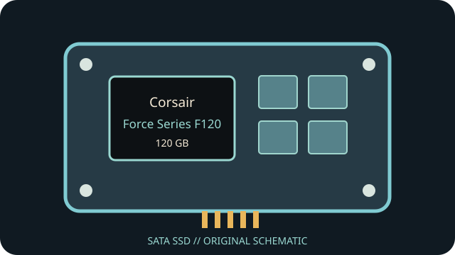

[ INDIVIDUAL COMPONENT // SATA SSD ]
Corsair Force Series F120 120 GB
Capacity- and part-specific archival record. Performance and construction notes are tied to the cited model documentation; do not generalize them across revisions.

IDENTIFICATION: Match exact part number CSSD-F120GB2, capacity and revision to the physical label. OEM and regional suffixes can differ.
Specifications
| Manufacturer / model / SKU | Corsair Force Series F120 — CSSD-F120GB2 |
|---|---|
| Capacity | 120 GB |
| Generation | 2010 client SATA SSD generation |
| Form factor | 2.5-inch; some packages included a 3.5-inch mounting bracket |
| SATA generation / interface | SATA 3 Gb/s (SATA II) |
| Controller / NAND / performance / endurance | SandForce SF-1200-family controller; MLC NAND. Corsair published maximum sequential transfer up to 285 MB/s read and 275 MB/s write. Exact NAND die and TBW vary by revision or are not specified in the linked Corsair product material. |
| TRIM / firmware | The product generation supports TRIM with compatible firmware and OS/driver path; verify exact firmware before use. Corsair SSD Toolbox/update availability and recognition of legacy F-series firmware are not guaranteed. |
| Host compatibility | Standard 2.5-inch SATA data/power; 3 Gb/s maximum link. Host SATA controller/BIOS, AHCI driver and operating-system TRIM pass-through affect behavior. Check package contents for any 3.5-inch bracket; it is not required for a laptop bay. |
Age-related handling & preservation
- Before use, record the label, serial, firmware, SMART health attributes, host/controller and a read-only data/health snapshot; keep verified backups.
- Peak transfer rates and historical endurance ratings do not guarantee remaining life, powered-off retention or recovery after controller failure. Inspect for corrosion, damaged connectors and prior repair.
- Firmware utilities, manuals, warranty coverage and host drivers may be discontinued. Do not update, secure-erase or cross-flash until the full part number/revision and a verified backup are established.
- Check OS TRIM/SMART support directly; bridge, RAID, driver and BIOS behavior can block or alter these features.
Manufacturer / manual sources
- Corsair — Force Series F120 product pageManufacturer product page for the Force F120 and its launch performance specifications.
- Corsair — SSD firmware update guidanceManufacturer firmware guidance; do not infer that current tools support every discontinued drive.
Sources are HTTPS manufacturer product/support pages or product manuals. Match the complete drive label and document revision before applying family-level information to an individual unit.